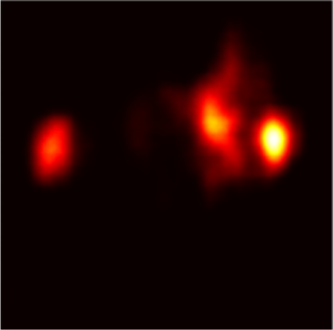

2025
Ingénieur Recherche
KU Leuven
Création et développement d'un modèle de prédiction de saliency maps avec le deep learning. Architecture encoder-decoder utilisant DINOv2, des Vision Transformers et des CNNs.
INGÉNIEUR GÉNÉRALISTE · CENTRALE NANTES
Ingénieur curieux et rigoureux, à l'interface entre simulation numérique, intelligence artificielle et systèmes mécaniques.
01 — PROFIL
Ma formation à Centrale Nantes m'a permis de développer une solide base en mécanique, propulsion, thermique et aérodynamique, complétée par une spécialisation en informatique pour l'IA.
Mes expériences m'ont amené à travailler sur des problématiques variées, de la simulation et calibration de systèmes mécaniques au développement de modèles de deep learning.
02 — INTELLIGENCE ARTIFICIELLE
Lors de mon stage de recherche à KU Leuven, j'ai travaillé sur la prédiction de saliency maps avec le deep learning.
L'objectif est de prédire les zones d'une image qui attirent le plus l'attention visuelle.

C'est une représentation qui permet de visualiser les zones d'une image auxquelles un modèle accorde le plus d'importance.
Modèle classé dans le top 15 sur plusieurs métriques de référence, avec 5 métriques sur 6 concernées.
03 — EXPÉRIENCE
KU Leuven
Création et développement d'un modèle de prédiction de saliency maps avec le deep learning. Architecture encoder-decoder utilisant DINOv2, des Vision Transformers et des CNNs.
LHEEA
Prise en main et calibration d'un modèle d'injecteur de carburant pour moteur à combustion interne sur Amesim, à partir de résultats expérimentaux.
Zeplug
Déploiement d'infrastructures de recharge pour véhicules électriques en immeubles résidentiels, avec jusqu'à 70 projets simultanément.
04 — COMPÉTENCES
Python · C++ · Matlab / Simulink
Machine Learning · Deep Learning · DINOv2
Amesim · GT-Suite · StarCCM+
Pandas · NumPy · SQL
SolidWorks
Anglais avancé · TOEIC 960/990 · Japonais débutant
05 — FORMATION
Diplôme d'ingénieur généraliste
06 — CONTACT